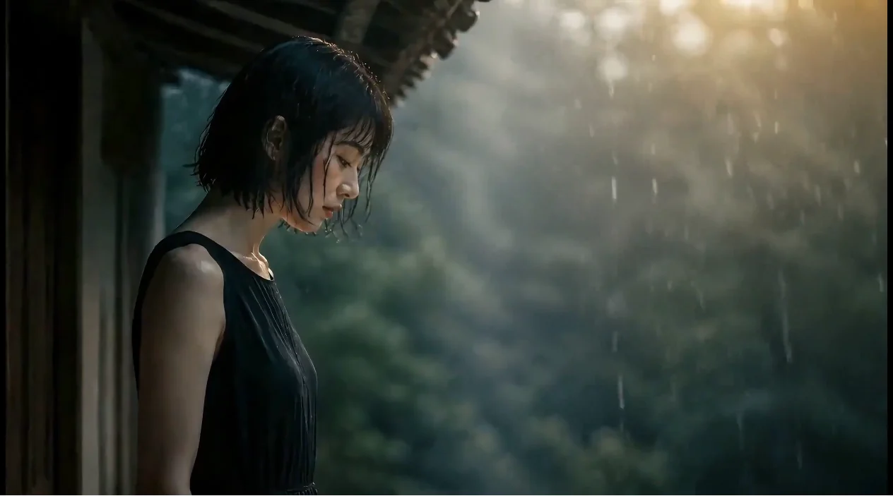

家居纺织 · 01
主题窗帘
将辅助图案与角色形象延展到家居空间。
AI VISUAL · VIDEO · ORIGINAL IP求职作品集
围绕情绪影像与原创角色，完成从内容构思、提示词、生成筛选到剪辑与网页呈现的求职样片。

01 · AI VIDEO
以雨天、旧街与人物独处为主线，通过多镜头蒙太奇建立安静、潮湿、略带怀旧的观看感受。
02 · ORIGINAL IP
从固定识别特征出发，通过颜色、佩戴品、动作与产品载体，建立可持续扩展的角色视觉系统。
从角色特征出发，探索家居、毛绒、布艺与日常用品中的延展方式。
将辅助图案与角色形象延展到家居空间。
保留角色本体特征，转化为大型毛绒产品。
结合毛绒拼布与刺绣语言，形成随身文创。
利用充电线造型形成悬挂结构，连接形象与功能。
用轻量动作表现“等待满电—短暂亮起—稳定下来—决定出发”的情绪变化。
想看更完整的角色说明？「十九」另有独立项目页面。
打开完整IP作品集 ↗03 · CREATIVE PROCESS
我负责方向设定、场景策划、提示词、结果筛选与多轮修改，并根据内容目标组合使用不同AI工具。
明确情绪、受众和最终呈现形式。
拆解角色、场景、动作、光线与构图。
持续调整提示词，排除不一致和明显问题。
整理镜头节奏，并完成网页中的观看体验。
AVAILABLE FOR OPPORTUNITIES